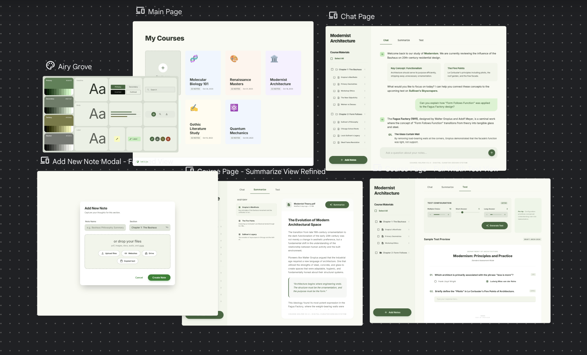

TLDR;
An educational RAG application that allows learners to interact with study materials, create summaries, and test their
knowledge through exams.
Features to Add Later
- Use advanced RAG techniques like hybrid search, small-to-big retrieval, reranking
- Allow upload of various file types, including websites, ppt, drive, and more
- Measure RAG performance including recall, precision, and RAGAS framework
Journal Entry
[Background]
This project came to mind as I began to reflect about returning to college after my military service.
One of the biggest issues of using generative AI for class content is that their answers are too general.
In other words, it is not specific to the terminologies or explanations provided by the teacher, which may
lead to confusion during both learning and exams.
To solve this problem, I wanted to create a learning AI teaching assistant program that can provide answers specific
to way that class is taught by the teacher.
Originally, I wanted to create a tool that involves both the teacher and the students.
Teachers would upload materials to the tool, which will then be used to provide answers
to the students.
Because the teacher can view all the interactions between the students and the AI, they
will be able to discover what concepts that students are struggling most with.
The app will also provide metrics on how students are utilizing the AI assistant and direct
the subsequent classes accordingly.
The teacher can also disable the AI during exam period to make sure that students don't
blindly rely on the technology without deep understanding of the material.
However, even if I built the program, I had no way of testing with the usage of the software.
Therefore, I decided to switch it to a program for students.
The students will upload their own materials and notes for various courses.
They can interact with these materials by asking questions, generating summaries,
and created sample tests for exams.
[Application]
Till now, I didn't really plan the frontend in much details.
This time, I used Google Stitch to design the frontend, including the main page, chat page, summarize page, and test page.
Although the experience was far from customizing every detail, it provided a good basis to start the app.
As with the previous project, I continued to use React and Next.js.
I did want to try another framework, but the main focus of this project was on the RAG implmentation and DB.

After completing the basics of frontend, I moved on to the backend.
Python was the obvious choice, coupled with fastAPI for server and llamaindex for RAG.
Because a RAG application is inherently data intensive, I spent time designing my schemas
before actually beginning with code.
The data would be arranged in the following order, decreasing in size:
Course > Section > Document > Chunk.
I also thought about using a different DB, but stuck with postgresql with pgvector extension.
Cloudflare R2 was used as object storage to store all the files uploaded by the user.
The postgresql DB would be the source of truth, so deleting a course or
section in the DB would in turn delete all the files associated with it in R2.
The files stored in the R2 is also named after the UUID for each document in the DB.
[Feature 1: Chat]
Because the ingesting and retrieval would depend on the RAG techniques
that I would implement, I spent some time reflecting on it as well.
The techniques I hope to implement include the following:
- Citation - providing users with details on the source of information produced by the assistant.
- Small-to-big retrieval - having smaller child chunks for search and larger parent chunks to give context.
- Hybrid search - using both embedding and text search to find the most relevant chunks for a query
- Reranking - processing the chunks once again through another model to calculate relevancy scores
When I was implementing the chunking function, I realized that Vercel only allows
files uploads that are less than 4.5MB in size.
Because many documents will be bigger than this, the program uploads directly to the backend only for files.
While this does expose the backend api in the frontend, I couldn't figure out another way
to allow large files to be uploaded.
The ingestion process is as follows.
First, the document is added to the documents tables.
Then, the file is added to the cloudflare R2 and chunked using llamaindex asynchronously.
There is a separate chunk_embedding table in case we switch our embedding model.
The chunks overlap with each other to prevent loss of context within our chunks.
After the chunks were complete, it was time to move on to the retrieval process.
The basic retrieval process was simple, with postgresql handling the consine similarity calculation
with HNSW-based index.
However, I noticed that the structure of the answer and the citations were not consistent.
The best way to get structured answer would be function calling, but
I thought I would start with strict prompting + validation and see if that is sufficient first.
The prompt involves rules on how the inline citations should occur, limiting answers to
information provided by the chunks, and few-shot prompting with good and bad examples.
Because validation requires the entire response to come, I turned off streaming for the initial llm response.
Whenever a citation is produced, its format is validated, converted into the uuid of the
chunk its referencing.
In the frontend, whenever the a chunk id is found, it queries the neccesary information regarding
the chunk and shows it through a tooltip when clicked.
If a document (and therefore the chunk) is deleted for a response, the citations simply disappear.
[Feature 2: Summarize]
Next, I move on to the second big feature of the app - summarize.
The process of summarizing depends heavily on whether the token size of the documents
is safely within the context limit of the model.
If the document is small, one call to the llm would be enough to produce a summary.
However, if the document exceeds the context limit, it would have to be divided.
I decided to summarize individual chunks and then combine the summary to create a final summary.
However, because the current chunks are too small (350 tokens with 60 overlap),
I decide to create parents chunks that are bigger in size.
These parent chunks would also be used later for small to big retrieval anyway, so it was good to implement it early.
With parent chunks in mind, the ingestion process needed to a revision as well.
Now, parents chunks that do not overlap with each other are created first, followed by child chunks within each parent chunk.
Currently, for documents greater than 60% of the document limit, a batch summary with 20 parent chunks each is produced,
followed by a final summary.
Obviously, 20 is a very arbitrary number, and there may be a lot of improvements over the batch process.
Sections and chapters within documents can be analyzed to provide more meaningful divides.
However, this is work to be done later.
After designing the basic implementation of the summarize feature, I began with the details.
Because the purpose of generating a summary may vastly different depending on the user and the situation,
I provided options such as level of detail, audience, length, focus, and more.
Also because the summary generation process involved quite a few parallel LLM calls, it would
often take minutes to generate the final summary depending on the network and the provider availability.
Therefore, similar to large file upload, this feature also involves a direct call to the backend api to
avoid any timeouts due to limits of vercel as a host.
Even after generating summaries that are customized for the purpose of the user, the LLM may still generate
summaries that are are not fully satisfactory for the user.
So, a feature to edit the summaries was also added, with the changes that user wishes being taken as a text input.
Because the the edit may require more or less effort depending on the gol of the change, I added two edit types.
These include a structural edit where only information in the current summary is used to reformat the summary,
and a content edit where additional retrieval is performed to provide incorporate information needed to update the summary.
The retrieval is similar to what is used for the chat features, with the top 5 similar chunks being used as resource.
[Feature 3: Test]
Next, I moved on to the last big feature of the app.
Providing users with a feature to test their knowledge through questions.
Obviously, we can just simply dump the entire content of the document and ask the llm to generate questions directly,
but this won't be pedagoically beneficial.
It will also lack the attention to detail or provide sufficient feedback to each question to users learn.
Therefore, after some exploration on how to best generate the questions, I ended up with a 3 step approach.
First, the app asks the user the purpose of the test being generated and the number of MCQs and FRQs that they want.
Then, it performs the following sequential LLM calls:
- Process the document and extract learning objectives from it, using batching if neccessary.
- Taking the purpose of the test into account, pick top N objectives for MCQs and top M objectives for FRQs
- For each objective, retrieve the most relevant chunks and use that information to generate a question.
For me, this approach seemed to hit the balance between pedagogical details and resources (both time and LLM calls).
It also takes advantage of the retrieval system that we already have in place.
For each answer option in an MCQ question, an explanation to why its wrong/correct is generated.
For each FRQ question, an ideal answer and a rubric is generated to be used for grading later on.
After that, it was testing different prompts and results and adding small features that would be beneficial.
For example, I noticed that the learning objectives that was produced involved asking details about specific examples
that were not very important, so the prompt was update to focus on the bigger picture.
The LLM also had the tendency to generate the correct answer for the MCQ as the first or second option, so now
the order of the options is shuffled each time.
Then, I thought that it would also be beneficial to allow users to generate more questions for a test, as the LLM
often generated more learning objectives than was used for one question set.
After finishing a test, the user has the option to either try the test again or generate more questions using
the yet unused learning objectives.
All the previous attempts for a test is also recording and available for review.
Now, it was time to deploy the app in production.
As before, python backend is hosted using modal, and the next.js frontend using vercel.
After deployment, I realized that the two process of uploading document to backend and
then uploading the doucment to R2 from backend takes too long, causing time out errors.
Therefore, I changed the procedure to first allow browser to upload directly to the R2,
followed by backend processing the document from the R2 and producing chunks.
For now, the project has come to a temporary end.
Obviously, to make it production level, I need to create authentication as well.
However, this feature was already practiced in my previous project
Language Buddy,
and I felt no need to implement the same thing again.
Throughout this project, I think the biggest gain was experience creating a data-intensive application.
I think this is the first time that I used tables and object storage to this extent,
constantly thinking of the best schema to represent the data that invovled in the RAG application.